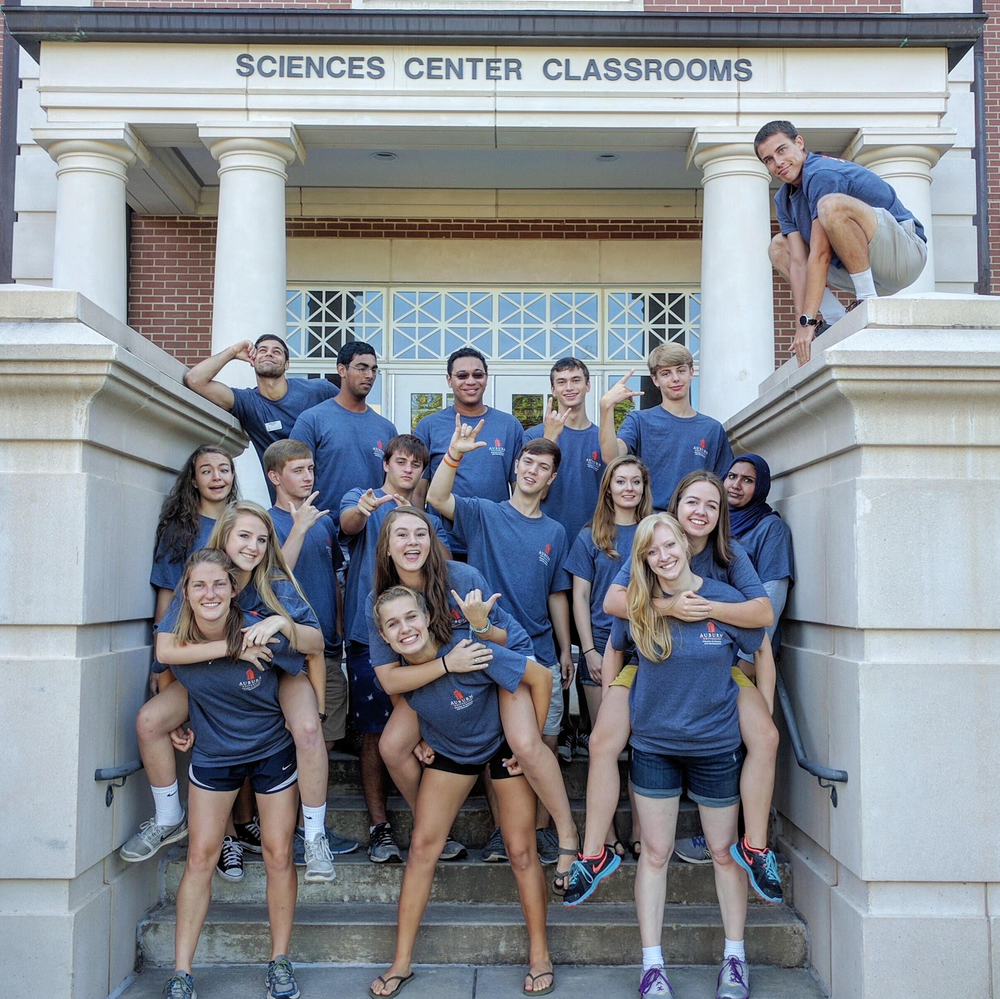
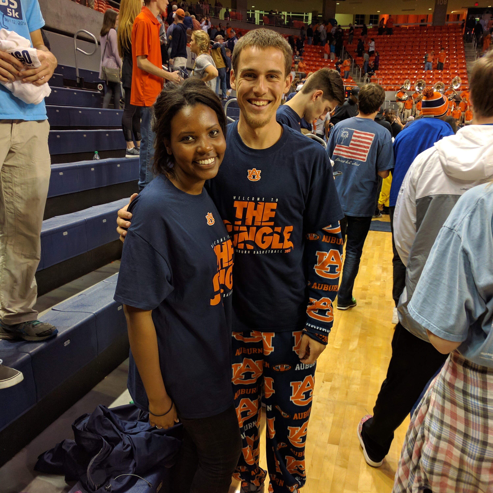

Jacob is 22 years old and is a senior at Auburn University studying Software Engineering.

Jacob works for the Auburn University College of Sciences and Mathematics Outreach Office where he gets to help with a range of events for K-12 students and teachers focusing on science, technology, engineering, and math.

Jacob enjoys all college basketball and especially supporting the Auburn Tigers on the court. Jacob serves as the leader of The Jungle, Auburn Basketball’s official student section.

Jacob has recently picked up a new hobby of cycling. Jacob currently rides with the Auburn Flyers, the club cycling team at Auburn University, and plans to race for the first time with the team in the spring.